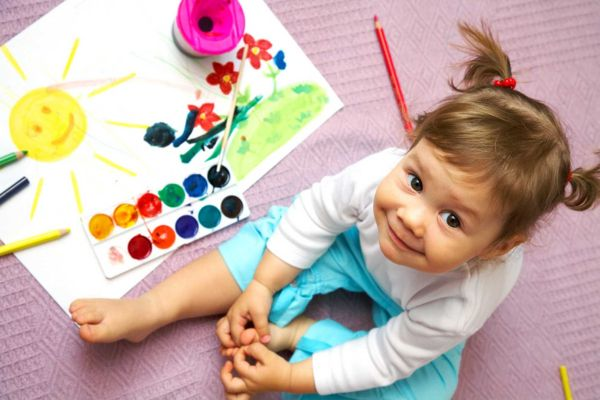
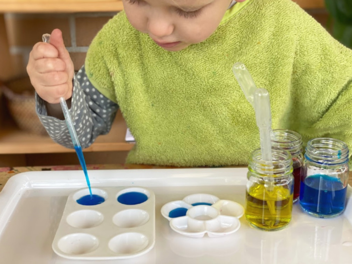
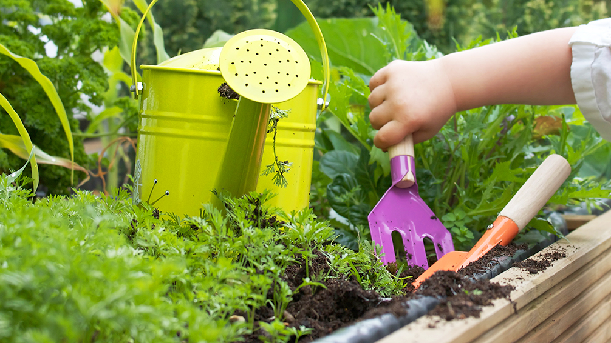

Play-Dough
Play-dough is often used as part of the heavy work component of a sensory diet.
They can also help improve a child’s fine motor skills. Encourage your child to squeeze, stretch, pinch and roll “snakes” or “worms”
with the play clay.
You can even have your child try to cut the play-dough with scissors.Painting
Different types of painting can help strengthen your child’s hand-eye coordination and manual dexterity.
Finger painting gives kids an opportunity to use their hands — and to get messy.
Painting with a brush helps kids learn to hold a brush and gain greater control using it as a tool.
To add a little sensory play to the mix, you can even try scratch-and-sniff painting.Playing with sponges
A new clean sponge, some water and two bowls are all you need for another activity to build fine motor skills.
Fill a bowl with water and leave the other empty.
Your child can soak the sponge in the water and then squeeze out the sponge into the other bowl.
It’s a simple game that can strengthen hands and forearms.
If you cut off a cube of the sponge and have a small chalkboard and some chalk,
you can also do a “Wet-Dry-Try” multisensory handwriting activity.Water play
Fill a cup about a quarter full of water. Give your child an empty cup and an eyedropper or a clean medicine syringe.
Have your child try to transfer the water from one cup to the other by drawing the water into the dropper or syringe
and then dropping or squirting it into the empty cup.
You could also give your child more cups, add food coloring to the water, and make this a color-mixing experiment. Gardening and planting
Digging and gardening may seem like activities more suited to building gross motor skills, but there are parts of it
that require smaller muscle control, too.
For instance, transferring seedlings into a garden requires hand-eye coordination skills to safely carry the smaller
plant to the new hole.
Your child will also need to be able to grasp a trowel to dig and to use a pincer grasp when picking up seeds to plant.




